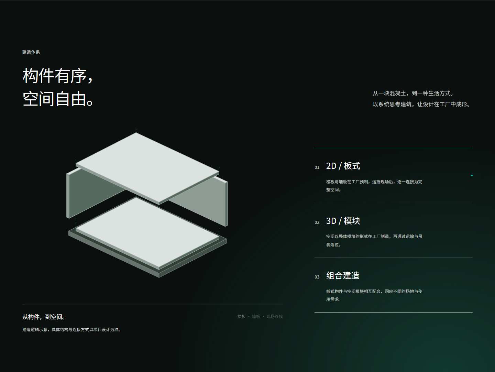
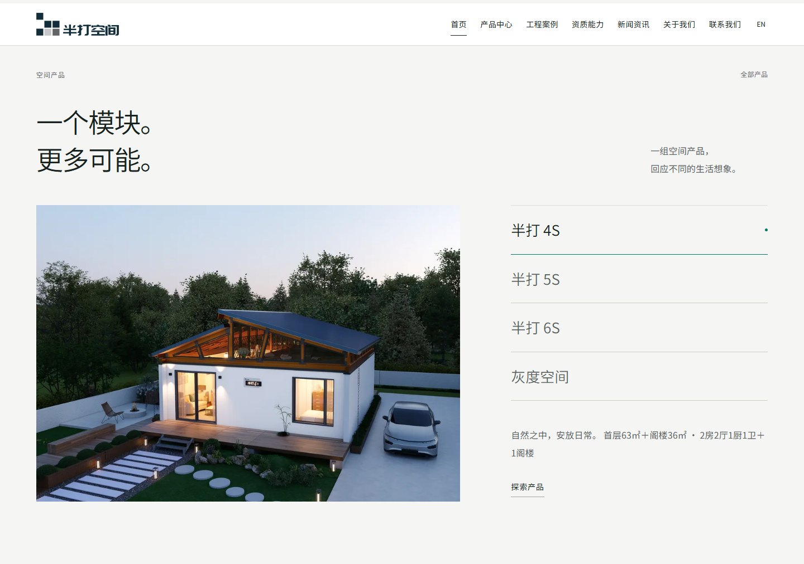
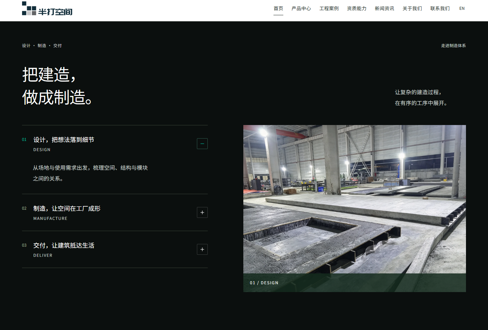
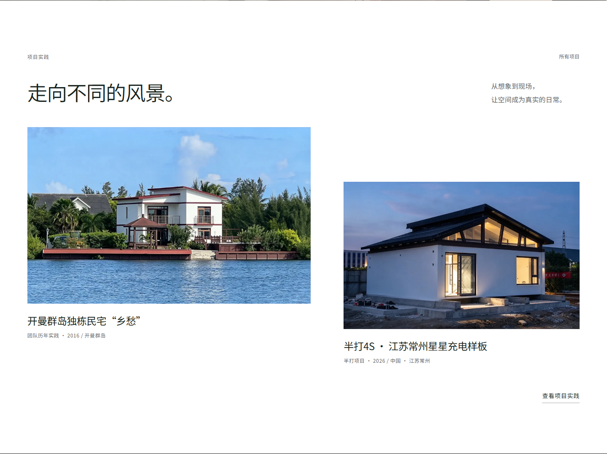

半打空间 · 2026-10-10 · 线上 r28 / 9c0de5c交付前验收评审
阶段验收有条件通过；完成四项收口后再作终验。
整体简约方向、满幅摄影、按钮体系和正文图片展示已稳定。没有发现阻断浏览的问题，之前的图片黑边、内部填充条和正文裁切未复现。当前仍有明确的可读性和细节问题，不建议写成“全部通过、无可优化项”。本轮仅评审，没有更改网站或重新发布。
本轮实测范围
33 个生成页面 × 9 类视口，共 297 项布局检查：0 失败、0 脚本错误。覆盖 320、375、768、1024、1440、1920、2560px、844×390 横屏、720×450 等效缩放视口。正文图片原比例、容器贴合、导航不散行均通过。
48 项单元测试、46 项素材检查通过。人工查看 11 个页面的桌面/手机截图；22 组首屏自动无障碍检查没有确定违规，但渐变色对比存在需人工判断项，因此不等于全站无障碍通过。
12 组关键交互通过，含两处中英文轮播、六款技术图缩放/焦点恢复、视频手动播放及不预加载、本地需求下载。另核对案例 7/3/10 筛选、三位联系人的二维码放大、手机菜单 Escape 关闭与焦点恢复。
深色章节的辅助说明过暗
“楼板 · 墙板 · 现场连接”等说明为 12px、#59645e；即使以最深的底色 #0b0f0e 计算，对比度也只有约 3.13:1。渐变背景处可能更低。自动工具将这一项列为需要人工检查，不能把零自动违规当作通过。建议统一深色章节的浅色辅助文字，三种示意状态一起复核。

W3C：普通文字最低对比度 4.5:1。此项针对功能说明文字，不将官方 Logo 颜色取舍等同于正文要求。
终验前修正 · 02英文页切换提示仍有中文
可见入口“中文”是正确的；问题在于悬停提示与无障碍名称仍是“中文 — 切换到对应中文页面”。翻译检查发现 1 个共享遗漏字符串。保留可见语言名称，辅助说明按英文页面本地化即可。
精修 · 03参数与年份换行缺乏控制
首页 4S 摘要将主张、面积、户型拼为一段，1440px 下“1阁楼”孤立落行；关于页的 2018–2021 也被拆成两行。建议将摘要分组、保持户型语义完整，并给年份区间足够宽度。无需更换字体或整体网格。

精修 · 04“设计”步骤的图片更像生产现场
当前图片是工厂预制板生产实拍，与“设计，把想法落到细节”对应较弱。建议将生产照片放在制造步骤，设计步骤采用已有技术示意，避免用文案强行解释不对应的图片。

应当保留的部分
满幅首屏没有两侧黑边；案例照片已回到真实比例，没有上下填充条；主次按钮和 EN 入口可见样式统一；图集保持技术图、效果图与实拍的区分。现阶段应做局部收口，不再全面改版。

可选提升与范围边界
- 原色 Logo 深蓝色块在深色摄影上辨识度偏弱，但当前颜色是已确认要求。可改善其下方选图/焦点，不擅自加白边、底板或重绘品牌。
- 创始人生活照、宽范围地图截图的专业感受素材限制，可后续更换正式人像与清晰局部地图。
- 6S 室内图、新闻招聘资料仍缺；发送服务、正式域名与 HTTPS 不在当前约定范围。
- 本轮仅 Windows Edge/Chromium，未覆盖实机 Safari/iOS/Android、读屏或真实弱网；等效缩放不等同原生 200% 全设备测试。
自动检查与视觉抽样为本轮新结果；旧报告不作为本轮通过依据。Awwwards 等奖项是目标参考，不能由本次自查认定达到获奖标准。
机器可读评审及代码定位